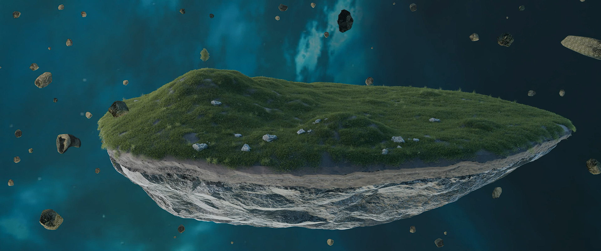

О нас
Сотрудники
Сцены
Поддержать
Контакты
Деревня Эллаев
Деревня расположенна между горами, в зеленом каньйоне
Поле боя
Рыцарь на поле после боя, сцена в красных, большая часть сцены сделана на гео-нодах

Парящий остров
Сцена с островом с камнями вокруг сделанными на гео-нодах